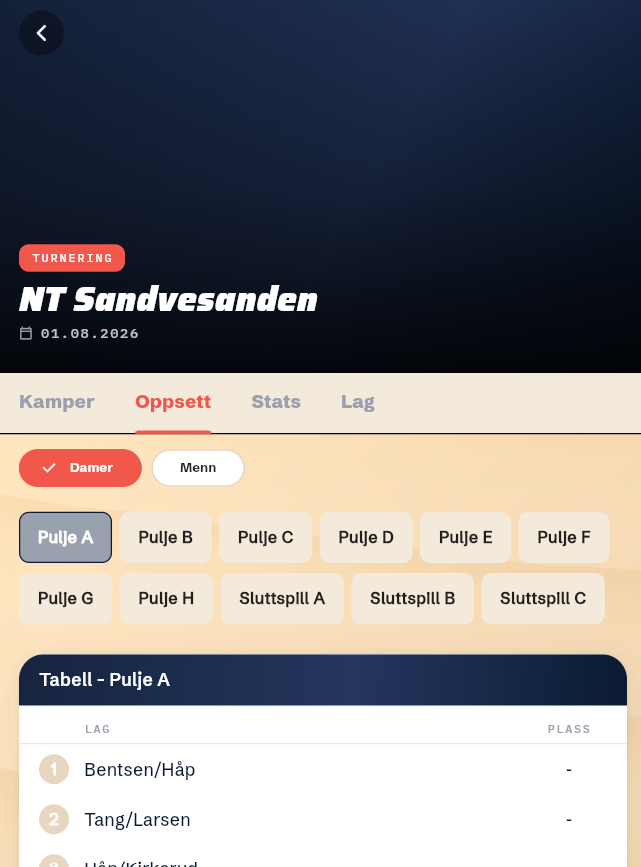
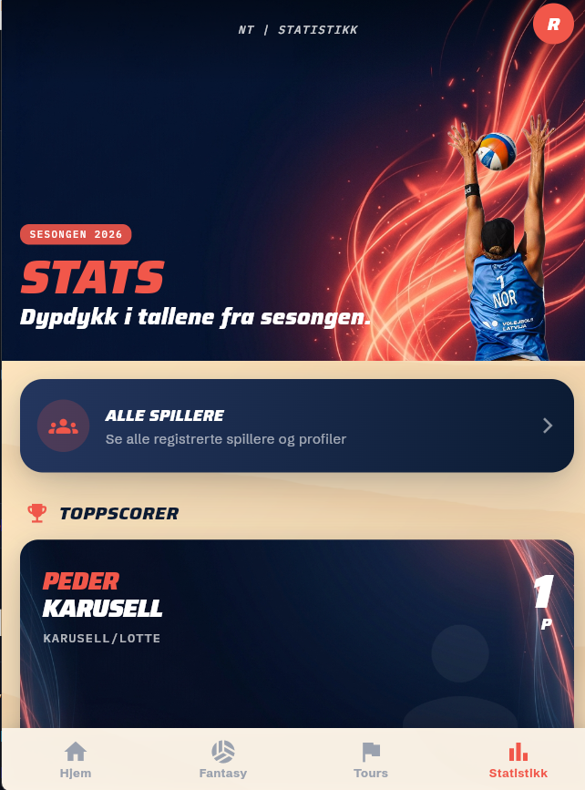
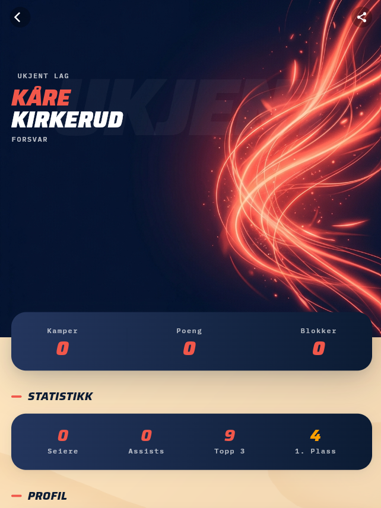

Spikedunk
Case Study: Et komplett økosystem for sandvolleyball
Prosjektet & Problemet
Spikedunk er et hobbyprosjekt bygget for norsk sandvolleyball. Prosjektet er per i dag uoffisielt og appene er ikke publisert i app-butikkene, men konseptet er utviklet for å vise hvordan sporten kan gjøres enda proffere enn i dag. Tidligere har organisering av slike turneringer vært preget av manuelle prosesser: papirbaserte påmeldinger, regneark for kampoppsett, og fysiske resultattavler som må oppdateres for hånd. Dette prosjektet utforsker hvordan vi kan digitalisere og automatisere disse prosessene. Ved å gi bedre tilgjengelighet til å se stats, live-score og oppsett, demonstrerer appene hvordan man kan fjerne friksjonen for både arrangører, spillere og publikum.




Arkitektur & Teknologivalg
For å bygge et skalerbart og fremtidsrettet system, falt valget på Flutter og Dart for frontend og Google Firebase (Auth, Firestore, Cloud Functions) som backend.
Hvorfor Flutter? Rammeverket lar oss skrive én felles kodebase som kan kompileres nativt for både iOS, Android og Web. Dette sparer enormt med utviklingstid uten å gå på bekostning av ytelse eller brukeropplevelse.
Agentic Coding & Google-økosystemet: En sentral del av utviklingsmetodikken har vært bruken av Google Antigravity (drevet av Gemini) for avansert "agentic coding". Fordi hele stacken – fra Firebase og Flutter, til Gemini og Antigravity – er bygget av Google, fungerer de eksepsjonelt bra sammen. AI-agentene har en utrolig dyp, innebygd forståelse for hvordan Firebase og Flutter bør sys sammen, noe som har gjort at komplekse integrasjoner og server-side logikk har gått langt raskere enn ved tradisjonell programmering.
Hvorfor tre separate applikasjoner?
I stedet for å bygge én gigantisk applikasjon, ble systemet delt opp i tre spesialiserte Flutter-apper som deler samme Firebase-backend:
- Spiller-app: Spillerens portal for påmelding til turneringer, visning av kampoppsett, stats og resultater, med trygg og enkel innlogging via Google Sign-In.
- Admin-verktøy: Arrangørens verktøy for å opprette turneringer, generere brackets (sluttspill/puljer) og tildele kamper. Her benyttes også Firebase Cloud Functions (Node.js) for sikker server-side logikk.
- Livescore-tavle: En dedikert skjerm-app (tavle) som står ved banen for sanntidsvisning av poeng og kampstatus. Drevet av Firestore sine sanntids-listeners.
Denne mikrotjeneste-inspirerte tilnærmingen på klient-siden gir flere arkitektoniske fordeler. Hver app har en spesifikk domenekontekst, noe som reduserer kompleksiteten i koden, minimerer app-størrelsen for sluttbrukerne, og tillater uavhengige oppdateringer av for eksempel livescore-tavlen uten å påvirke spiller-appen.
Kjernefunksjonalitet
Systemet lener seg tungt på avanserte funksjoner i Google Firebase for å levere en sømløs opplevelse:
- Firestore Sanntidsdatabase for Livescore: Når en dommer eller funksjonær oppdaterer poengsummen i Admin-appen, lytter Livescore-appen ved banen og spiller-appene på Firestore-dokumentet. Endringene pushes umiddelbart over nettet med minimal forsinkelse.
- Sikker backend-logikk med Cloud Functions: Kritiske operasjoner, som generering av kampoppsett og kalkulering av avansement, utføres ikke på klienten. I stedet kaller appene Cloud Functions, som sikrer at turneringsreglene håndheves trygt på serveren.
- Sikkerhetsregler (Firebase Security Rules): Sikkerhet er bygget inn på databasenivå. Dette sikrer at kun turneringsadministratorer kan endre kampresultater, mens spillere kun har tilgang til sine egne data.
Problemløsning (Dypdykk)
Utfordring: Sanntidssynkronisering av poeng og tilstandshåndtering
En av de største tekniske utfordringene var å sikre at tilstanden for en pågående kamp (poeng, sett, timeout) var 100 % synkronisert på tvers av dommerens enhet, livescore-skjermen og publikums telefoner, selv under dårlige nettverksforhold (for eksempel på en avsidesliggende strand).
For å løse dette implementerte jeg en hybrid tilstandshåndtering der kritisk state lagres i Firestore, mens optimistisk UI-oppdatering brukes på klienten (via Flutter sine state management-løsninger) for å gi umiddelbar feedback til dommeren. Ved konflikter eller nettverksbrudd sørger Firebase og Firestore sine sanntids-listeners for å resynkronisere klientens lokale tilstand mot "source of truth" i skyen.
Veien Videre og Læring
Utviklingen av Spikedunk har gitt enorm innsikt i å bygge distribuerte systemer og håndtere komplekse datamodeller relatert til idrettsarrangementer. Den viktigste lærdommen var verdien av streng databasestrukturering tidlig i prosjektet og kraften i å utnytte Firebase Cloud Functions og Security Rules for å flytte sikkerhetslogikken ut av frontend. Selv om dette foreløpig er et uoffisielt hobbyprosjekt, viste valget av Flutter og oppdelingen i tre applikasjoner seg som en stor suksess for å levere et mer profesjonelt, brukervennlig og raskt produkt-konsept til volleyball-Norge.